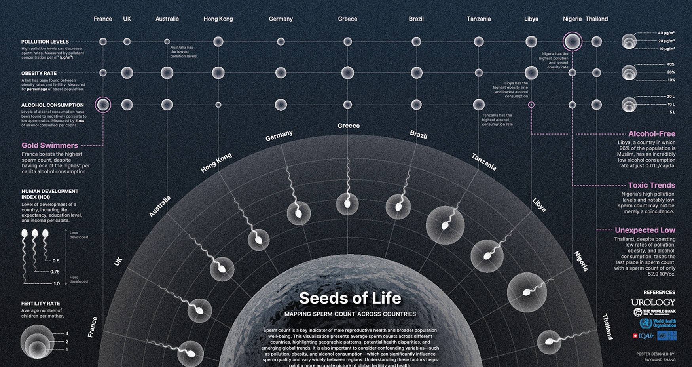
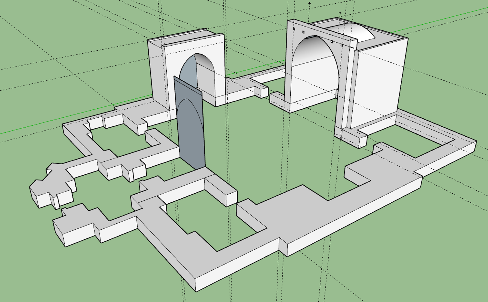

Seeds of Life Mapping Sperm Count Across Countries
Target Audience: Educated lay audience
Tools: Excel, Tableau, Illustrator, Blender
Client: Shehryar Saharan (BMC Faculty)
This infographic gives readers a glimpse into the history of bimaristans, early Islamic hospitals that revolutionized medicine and healthcare. At the heart of the poster is a cutaway view of the oldest standing bimaristan in the world, Bimaristan Nur Al-Din.
Research & Ideation.
I browsed papers and online databases.

Initial SketchUp file from floor plans

In progress version in SketchUp

Final Sketchup version before bringing into Maya
Data Analysis.
Layout & Graphic Design.
3D Modelling (Egg).
References.
1. Fisch, H., Ikeguchi, E. F., & Goluboff, E. T. (1996). Worldwide variations in sperm counts. Urology, 48(6), 909–911. https://doi.org/10.1016/s0090-4295(96)00301-9
2. idk.
3. idk.
4. idk.
5. idk.
6. idk.
7. idk.
8. idk.